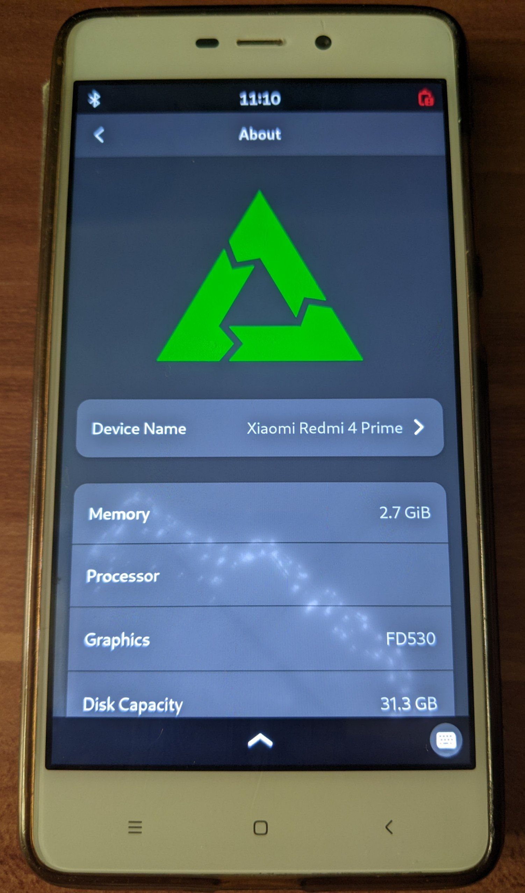

Xiaomi Redmi 4 Prime (xiaomi-markw)
Jump to navigation
Jump to search
|
 xiaomi-markw showing phosh about | |
| Manufacturer | Xiaomi |
|---|---|
| Name | Redmi 4 Prime |
| Codename | xiaomi-markw |
| Released | 2016 |
| Category | testing |
| Original software | Android |
| Original version | 6.0.1 |
| postmarketOS kernel | mainline |
| Hardware | |
| Chipset | Qualcomm Snapdragon 625 (MSM8953) |
| CPU | Octa-core 2 GHz Cortex-A53 |
| GPU | Adreno 506 |
| Display | 1080x1920 IPS |
| Storage | 32 GB |
| Memory | 3 GB |
| Architecture | aarch64 |
{kind=link}
| USB Networking |
Works
|
|---|---|
| Flashing |
Works
|
| Touchscreen |
Works
|
| Display |
Works
|
| WiFi |
Works
|
| FDE |
Partial
|
| Mainline |
Works
|
| Battery |
Works
|
| 3D Acceleration |
Works
|
| Audio | |
| Bluetooth |
Works
|
| Camera | |
| GPS | |
| Mobile data | |
| SMS | |
| Calls | |
| USB OTG |
Works
|
| NFC |
Unavailable
|
| Accelerometer |
Works
|
|---|---|
| Magnetometer |
Works
|
| Ambient Light |
Partial
|
| Proximity |
Works
|
| Hall Effect |
Unavailable
|
| Barometer |
Unavailable
|
| Power Sensor | |
| Camera Flash | |
|---|---|
| Keyboard |
Unavailable
|
| Touchpad |
Unavailable
|
| USB-A |
Unavailable
|
| HDMI/DP |
Unavailable
|
| Ir TX | |
| Ir RX | |
| Stylus | |
| Haptics | |
| Ethernet | |
| FOSS bootloader | |
|
This device is based on the Snapdragon 625. See the SoC page for common tips, guides and troubleshooting steps |
Contributors
Maintainer(s)
Users owning this device
- Vipaol (Notes: (Ebbg/Atmel) Mainlining.)
How to enter flash mode
[Power] + [Vol-] to fastboot mode
Device Notes
Display Panels
| Display | Touch | Status |
|---|---|---|
| Ebbg | atmel,maxtouch | Works |
| Tianma | edt,edt-5336 (edt,edt-ft5x06) | Works |
Sensors
Connected to i2c-gpio
| Sensor | Model | Status |
|---|---|---|
| Accelerometer/Gyroscope | bosch,bmi120 (bosch,bmi160) | Works |
| Light/Proximity | liteon,ltr559 (liteon,ltr501) | Works |
| Magnetometer | yamaha,yas537 (yamaha,yas530) | Works |
Bluetooth
To fix it in phosh: rc-update add bluetooth boot
Suspend
The device can't wake up from suspend (but turning display off is working). You can disable it in your UI's settings.
FDE
Atmel touch works incorrectly in osk-sdl (focaltech is untested). You can just use more modern unl0kr instead of osk-sdl.
Installation
- Follow the Installation guide
| Note: lk2nd is a hard dependency, without it the mainline kernel will not select the display panel and you'll get a black screen. |
- Use the
--add lk2nd-msm8953flag duringpmbootstrap installto get the lk2nd package. - Do not use "android recovery zip" method, because it can't install lk2nd.
- If you want to use FDE, you need to add
--fde --add=unl0krto use unl0kr instead of broken osk-sdl.
Installation:
- On SD-card
-
- Find your SD-card:
lsblk - Install (change /dev/sdX to your card)
$ pmbootstrap install --add lk2nd-msm8953 --sdcard /dev/sdX
- Find your SD-card:
- On internal memory
-
$ pmbootstrap install --add lk2nd-msm8953 $ pmbootstrap flasher flash_rootfs --partition userdata
Flash lk2nd:
$ pmbootstrap flasher flash_lk2nd
Then boot into lk2nd and flash the kernel:
$ pmbootstrap flasher flash_kernel